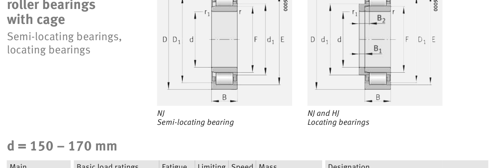

Original catalogue drawing - FAG Schaeffler HR 1, page 472

Scanned from the manufacturer catalogue page listing this part number. All part numbers printed on that table share the same drawing.
Scale cross-section
Blue = inner / outer ring, yellow = rolling element. Drawn to scale from this part's own
dimensions for selection reference only - not a manufacturing or assembly drawing.
Dimension table (mm / inch)
Symbol
Dimension
mm
inch
d
Bore diameter
150
5.9055
D
Outside diameter
270
10.6299
B
Inner-ring / bearing width
73
2.874
r
Chamfer (min)
3
0.1181
E
Roller-set outside dia.
242
9.5276
F
Roller-set bore dia.
182
7.1654
Notes
Weights are given in kg. Load ratings are shown in both the original catalogue units and the converted value (1 N = 0.2248 lbf). Data is provided for selection reference only - confirm against the latest official catalogue before ordering.
Main dimensions
Bore d (mm)
150
Outside dia. D (mm)
270
Width B (mm)
73
Inner-ring OD d1 (mm)
193.1
Inner-ring shoulder dia. D1 (mm)
233.2
Dimension E (mm)
242
Dimension F (mm)
182
Load ratings & speeds
Basic dynamic load rating Cr (lbs)
175351
Basic static load rating Cor (lbs)
218065
Basic dynamic load rating Cr (N)
780000
Basic static load rating C0r (N)
970000
Fatigue limit load Cur (N)
152000
Limiting speed nG (rpm)
3,950
Reference speed nB (rpm)
1,850
Weight
Weight (kg)
19.2
Mounting dimensions (fillets / shoulders)
Housing fillet r max (mm)
3
Chamfer r1 min (mm)
3
Shaft shoulder da (mm)
164
Shaft shoulder dc (mm)
196
Housing shoulder Da (mm)
256
Housing fillet ra max (mm)
2.5
Bearing life (ISO 281 basic rating life)
C / P
Equivalent load P (N)
L10 (106 rev)
L10h at 1,300 rpm
4
195,000
102
1,302
6
130,000
392
5,032
8
97,500
1,024
13,128
10
78,000
2,154
27,621
15
52,000
8,323
106,711
Basic rating life per ISO 281: L10 = (C/P)10/3 with C = 780,000 N. Hours = L10 x 106 / (60n). Life-modification factors for lubrication, contamination and temperature (aISO) are not included.
Source & traceability
Brand
FAG
Source catalogue
FAG / Schaeffler Rolling Bearings HR 1
Catalogue page
p.472 (dimensions)
Load ratings in newtons, fatigue limit load Cur, limiting speed nG and reference speed nB.
Send us the quantity you need and we will come back with price and
lead time, normally within 24 hours. Equivalent parts from other brands can be quoted at the same time.